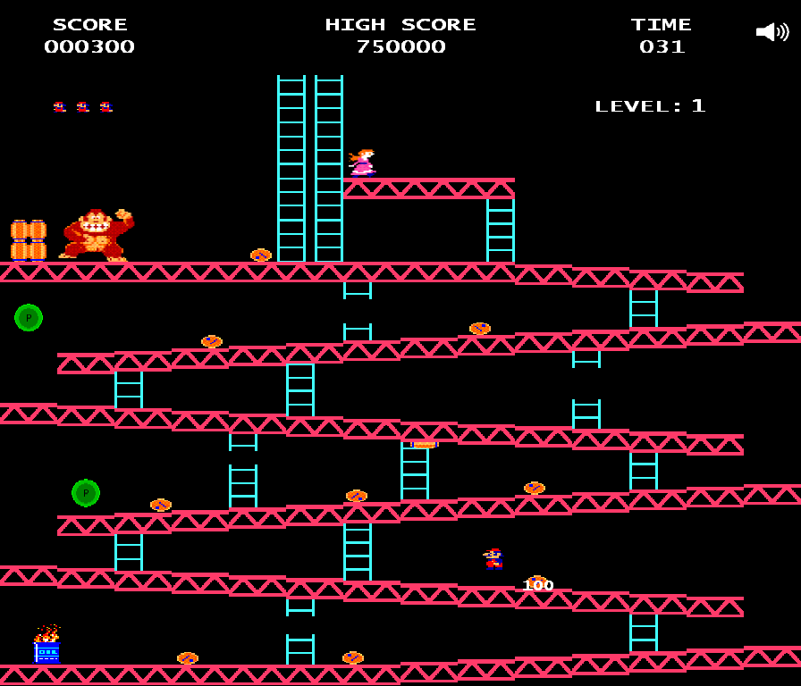

<div class="row">
    <h1>Proyectos realizados</h1>
    <div class="contenedor">
        <div class="col-sm-12 col-md-7 col-lg-7 parte1">
            <h2>Donkey Kong</h2>
            <p>En segundo año de la Licenciatura en Produccion de Videojuegos
                tuve que realizar la construccion del tan famoso y nostalgico videojuegos
                Donkey Kong.
                Los prefabs y tiles se descargan facilmente de la web.
                Mi trabajo fué el armado del juego y la programacion de mecanicas y físicas para
                su jugabilidad.
                Tal vez no parece mucho, pero terminarlo con exito y sin fallas fué un 
                momento muy felíz vivido.
            </p>
        </div>
        <div class="col-sm-12 col-md-3 col-lg-3 offset--md-1 offset-lg-1 parte2">
            
        </div>
    </div>
</div>>